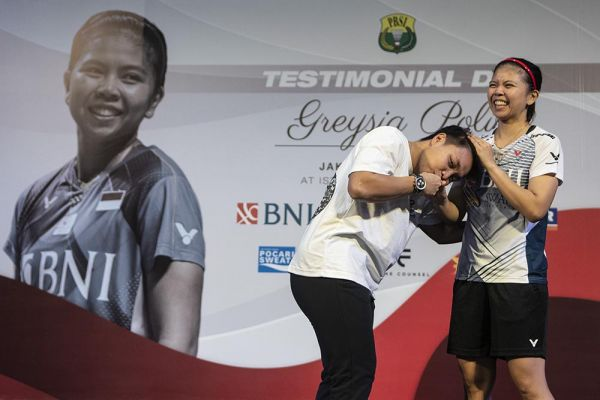

Greysia Polii Pensiun, Apriyani Rahayu Tak Kuasa Tahan Air Mata
Apriyani Rahayu tak kuasa menahan air mata saat melepas senior sekaligus partnernya, Greysia Polii, yang pensiun. Beberapa kali ia kedapatan menyeka air mata. Greysia diketahui memutuskan gantung raket dari dunia bulutangkis yang membesarkan namanya. Momen perpisahannya pun tersaji di Istora Gelora Bung Karno (GBK), Minggu (12/6/2022), dalam acara bertajuk Testimonial Day Greysia Polii.

Para pemain asing maupun dalam negeri turut menjadi saksi acara Testimonial Greysia Polii tersebut. Nuansa haru pun muncul dalam acara perpisahan dengan juara Olimpiade Tokyo 2020 itu.
Tak terkecuali Apriyani Rahayu. Apri yang duduk dalam deretan VVIP bersama pelatih Eng Hian dan keluarga Greysia Polii, tak kuasa menahan air matanya yang menetes di pipi.
Saat Ketua Umum PBSI Agung Firman Sampurna memberikan kata sambutannya soal Greysia Polii, Apri beberapa kali kedapatan menyeka air mata dengan tisu.
"Sederet prestasi sudah diberikan Greysia Polii. Sempat mengalami cedera tapi berhasil bangkit sampai akhirnya ia menjadi juara Olimpiade 2020 bersama Apriyani Rahayu," kata Agung.
"Terima kasih dan apresiasi setinggi-tingginya atas perjuangan dan prestasi di pentas internasional."
Ya, bagaimana pun, Apriyani cukup lama bersama Greysia. Pasangan senior dan junior itu punya chemistry yang padu. Dalam empat tahun terakhir, mereka berhasil membuktikan bisa menjadi pemain top 10 dunia, bahkan cukup disegani.
Terbukti, pada 2017 mereka mampu menyegel gelar juara di Thailand Open dan French Open. Pada tahun berikutnya, mereka mempertahankan gelar di Thailand Open dan menjadi juara di India Open. Kemudian menjadi juara di SEA Games 2019 Filipina, dan berhasil mempertahankan gelar juara India Open 2019.
Bahkan di 2020, mereka menjadi juara Spain Masters, Indonesia Masters, hingga puncaknya mereka menjuarai Olimpiade Tokyo 2020.